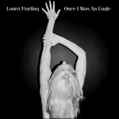
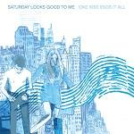

Music Reviews
-
Dirty Beaches Drifters / Love Is the Devil
For his sophomore double-LP as Dirty Beaches, Alex Zhang Hungtai crafts a sprawling, menacing wasteland of isolation and dread that relies largely on beautifully textured soundscapes to translate pain.
Peter Quinton reviews Dirty Beaches' blood and tear-soaked double-LP... -

Laura Marling Once I Was An Eagle
Laura Marling soars even higher with her 4th album.
Forrest Cardamenis is just a dove... -

Alice In Chains The Devil Put Dinosaurs Here
Alice in Chains didn't need to release another album, but with The Devil Put Dinosaurs Here, they have done nothing but strengthen their back catalogue further, creating a thing of malignant beauty, laced with filth and packing an elephantine punch.
Carl Purvis can confirm that grunge isn't dead... -

Camera Obscura Desire Lines
The Glasgow indie pop band stick to what works best, resulting in a notable synergy of Tracyanne Campbell's deeper explorations of wit and sensuality and the disciplined musicianship of a tight-knit band.
Juan Edgardo Rodríguez wants to give Tracyanne Campbell a hug... -
Baths Obsidian
Baths' second album is an exploration of his misanthropic alter-ego - but it has none of the elegance it needs to justify such an indulgence.
Stephen Wragg reviews... -
Primal Scream More Light
Twenty-six years after their first album, here's Primal Scream's tenth. Though, in a career marked with dizzying variations in quality, is it one of the ones that are worth listening to?
Mark Davison really struggled with this one... -

Saturday Looks Good To Me One Kiss Ends It All
On the band's eighth album, Saturday Looks Good To Me goes for a peanut-butter/chocolate approach with pop melodies and psychedelia. But how well did they balance the two?
John Grimley is always ready for a Saturday... -

Dinosaur Pile-Up Nature Nurture
If you like your music loud, Nature Nurture is like catnip for your ears. Straight-up, in your face, and equipped with more hooks than a witches cloakroom!
Carl Purvis is now giving his ears a rest... -

Colin Stetson New History Warfare Vol. 3: To See More Light
When he's not touring in Bon Iver's band, Colin Stetson is bursting blood vessels recording jaw-dropping solo saxophone epics, with a technical scope that seems physically impossible.
Stephen Wragg reviews... -

Stooshe London With The Lights On
The much-delayed debut album from the London pop trio finally gets released. Oh my days.
Joe Rivers likes a bit of New Jack Swing as much as the next man...